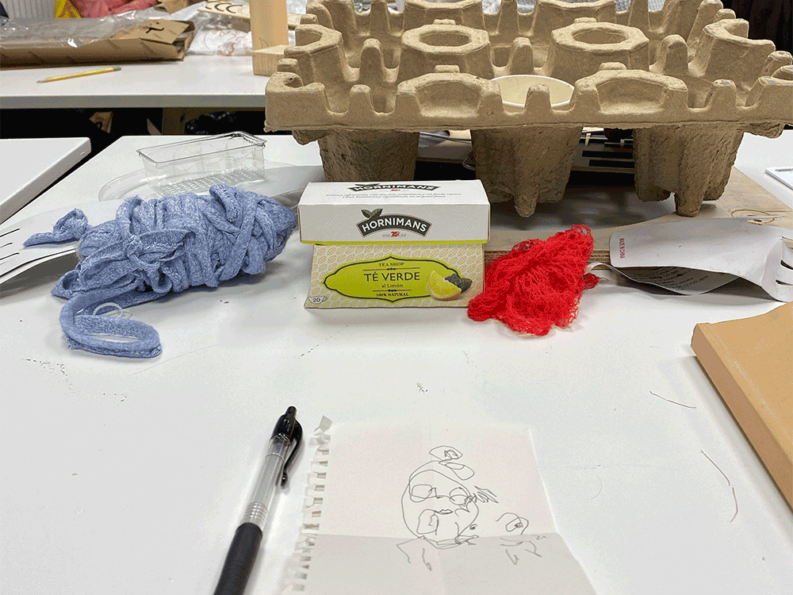

Living with Your Own Ideas
These two weeks were focused on understanding the "behind the scenes" of technology. Through breaking down (and rebuilding) physical machines to gathering data, we gained a deeper understanding of the inner workings of technology and ways we can use it as a tool for our projects.Magic Machines
We started working with materials before having an idea of what it would become. I had explored this mode of making before and felt ready to jump in.
A few of the scrap materials I brought were: fabric yarn, clothes hangar, a net bag used to hold bell peppers from the grocery store, cardboard, a plastic bottle, and tea bags. I gravitated towards the net bag and the fabric because they were flexible (and colorful) materials and I started wrapping them around different objects. I enjoyed how the flexible materials were able to shift forms and create variations within the same object. I decided to focus on this element of “variations” in output with a common input.
I reflected of the 1 minute self portrait I had drawn, which I drew with my non-dominant hand and my eyes closed (so I can better connect with my true self, and also because I can’t see myself anyways). The outcome of this drawing was a rough outline of my head with all of my features (eyes, nose, and mouth) drawn outside of my head. I decided this person didn’t use speech or sight to communicate, and that I needed to build a tool for them to communicate with touch.
In the end, I came up with two simple tools: the first one using the red net, paper clip, and a plastic bottle, and the second one using a clothes hanger and fabric yarn. Both of these objects you can interact with and transform the shape of the materials in different degrees and variations, similar to variations in sound for speech. Within my system, tactile variations of the object will determine the message I was communicating. For example, depending on how far the clothes hangar was stretched and how far the yarns are spaced out, it would communicate a message.
We also realized as a group, our machines each touched upon a different human sense. In her feedback, Kristina observed themes our group had in common were “becoming” and “unfinished explorations”. I resonated with this comment because what we had made seemed to reflect our aspirations more than a tool that would be useful.

The New Me
With an interest in accessibility in design, I wanted to gain first-hand insight into how accessible a daily life in Barcelona is for people with disabilities. To challenge myself, I committed to spending a day without speech, blurred vision, hard of hearing and poor manual dexterity. I hoped this experience would give me a small insight into understanding into the specific conveniences and inconveniences (in technology, human interaction, social transactions, navigations, etc.) in daily life in a city for people with disabilities. Here are ways I modified my senses for the day:
- Low, blurred vision: I have poor vision (nearsighted) and always wear glasses to be able to see clearly. My vision on both eyes are around -3.5, which means the words I’m typing on my computer screen start to get blurry if I sit straight up on my chair (1ft away). The further away something is from me, it is more blurred and less defined. For recordings I made, I used hand sanitizer on a clear plastic container lid and taped it to my phone camera lens to simulate what I was seeing (actually a bit worse)
- Hard of hearing: I used earplugs in both of my ears to block out loud noises. (“earplugs typically have an NRR between 22 dB to 33 dB.” - sleep foundation.org)
- Without speech: Committing to not speaking today. I have a feeling this sense will be the easiest transition for me, especially when I am alone and in a foreign country. I will need to challenge myself by inserting myself into social environments where speech is necessary.
- Lack of hand coordination: Using my non-dominant hand (left) to write today.
You can see the video on youtube here.
Reflections
- Define study boundaries (being able to describe the limits of the study) See “Goals” above
- Authentictiy (construct validity, being personally involved) I was fully committed to the parameters of the study from 9am to 9pm, and in that way, I felt I was authentic towards my project. However, the premise of my study (an able bodied person pretending to be a disabled body) inherently has issues of authenticity embedded in it. I think everyone I interacted with knew in some way that I was not actually deaf or hard of hearing. The worker at the boba shop even asked me “why?” when I showed him the paper that I could not speak today. The other factor is that I was being recorded, which gave away the message that something performative was happening.
- Plausibility or scholarship (it relates to current research, trends,…) In the design and exhibit design industries which I’ve worked in, there is a lack of research and focus on accessibility design. Although it is a requirement in the U.S. to comply with ADA policies when working in a 3D space, and the ADA regulations on virtual spaces are becoming more restrictive, it is not a priority for most companies. I think that as able bodied people and designers, we fundamentally have a huge hole in our understanding of what it’s like to navigate the world with disabilities. And most of the time, we are designing for other people like us. I think my study can act as an experimental research or activity in understanding the pain points, in where design can improve, and also give an alternative perspective to the way things should be designed.
- Criticality (instrumental utility, imagining ways of thinking and acting differently) I think this point is asking for a critical reflection on my study… In that case, I think I would have limited the technology or tool I was using to communicate with others more intentionally, so I can better understand the experience of using a specific thing. I would have put more focus on a few factors and observed these throughout the day.
- Self-revealing communication (communicate in an open and transparent way without filtering or changing what happened) I did not filter most of my field notes, except for a few areas where it was notes on specific people who I didn’t want to make uncomfortable. My experiences are left unfiltered and I think this is valuable because it is the content that I’m examining in my study.
- Ethnographic material with confessional content (personal material to be limited to relevant information in relation to the research subject) For this study, it was important for me to not filter my personal notes and experiences because the goal was to understand the general experience. In the next study, I would like to focus more deeply on a specific element of usability or accessibility, and in that case, I would focus less on my general reflections and more on relevant research.
- Generalizability (does it relate to others, can it be meaningful for others?) I think this study can be meaningful for others because it’s essentially asking someone to spend a day in someone else’s shoes, someone who is very different from you. It’s important to understand that the goal of my study is not to say I understand what it’s like to be disabled, but rather to give a deeper insight into experiences that I wouldn’t be able to get through other non-experiential means (reading, interviews, observing). Making ourselves vulnerable is the best and most direct way to feel and understand a concept.